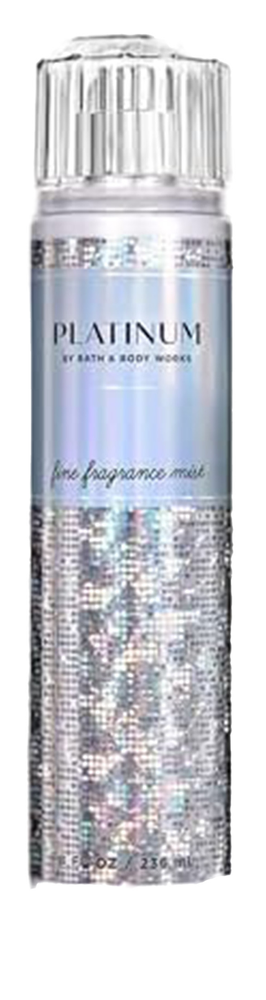

J’ai toujours réalisé que mon odorat était un peu plus développé que la moyenne. Par ce fait, j’ai été attiré par de nombreuses odeurs agréables au nez. Je voulais pouvoir avoir accès à différentes odeurs de chez moi alors en mai 2022, j’ai commencé ma collection. Au fil des années, ma collection n’a fait que grandir et compte maintenant 71 parfums et brumes corporelles.


